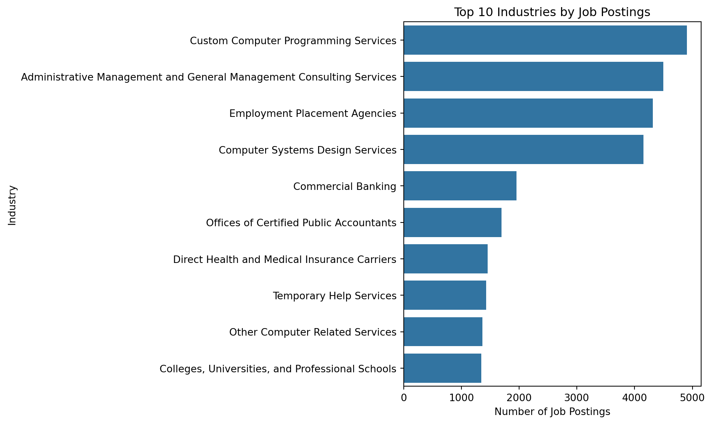
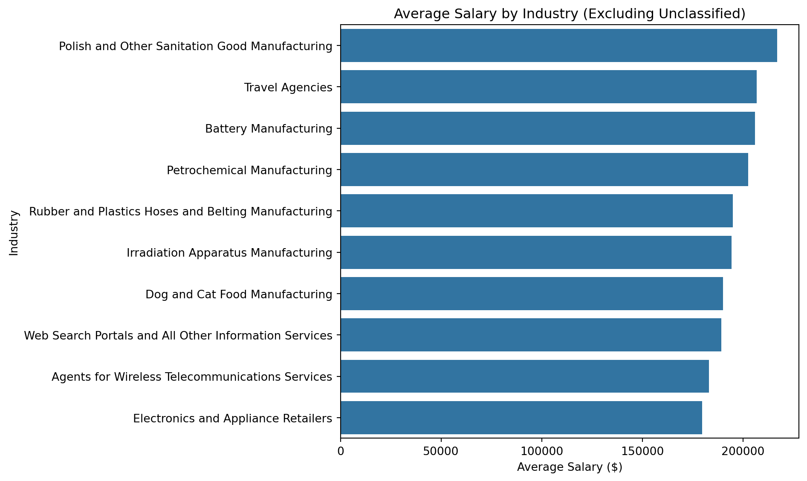
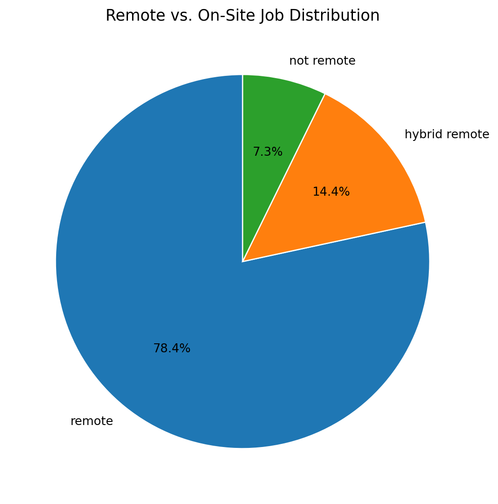

Exploratory Data Analysis (EDA) allows us to identify patterns and distributions in the job market dataset.
In this section, we focus on three aspects: 1. Job postings by industry
2. Salary distributions
3. Remote vs. on-site job proportions
1.1 Job Postings by Industry
Understanding industry demand helps reveal which sectors are most active in hiring.
import pandas as pdimport matplotlib.pyplot as pltimport seaborn as snsimport os# Load datasetdf = pd.read_csv("data/cleaned_lightcast.csv", low_memory=False)# Ensure /figures directory existsos.makedirs("figures", exist_ok=True)# colindustry_col ="NAICS_2022_6_NAME"# Clean up column namesdf.columns = df.columns.str.strip()#drop unclassifieddf = df[~df["NAICS_2022_6_NAME"].str.lower().str.contains("unclassified", na=False)]# Count top 10 industriestop_industries = df[industry_col].value_counts().head(10)plt.figure(figsize=(10, 6))sns.barplot(x=top_industries.values, y=top_industries.index, orient="h")plt.title("Top 10 Industries by Job Postings")plt.xlabel("Number of Job Postings")plt.ylabel("Industry")plt.tight_layout()plt.savefig("figures/industry_postings.png", dpi=300)plt.show()

A bar chart was chosen to visualize the number of job postings across different industries. This format makes it easy to compare industry demand and helps job seekers understand which sectors have the highest hiring activity.
Job demand is concentrated in tech and professional services: Custom Computer Programming Services leads, followed closely by Management Consulting, Employment Placement Agencies, and Computer Systems Design—each with ~4–5k postings. After these, volumes drop sharply to a second tier (Commercial Banking, CPA offices, Temporary Help, Health/Medical Insurance, Other Computer Services, Colleges/Universities) at ~1.3–2.0k. The prominence of staffing/placement agencies signals broad, economy-wide hiring, while the tech-heavy top ranks highlight sustained demand for digital and knowledge-worker skills.
1.2 Salary Distribution by Industry
import osimport pandas as pdimport matplotlib.pyplot as pltimport seaborn as snsos.makedirs("figures", exist_ok=True)df = pd.read_csv("data/cleaned_lightcast.csv", low_memory=False)# Define column namesindustry_col ="NAICS_2022_6_NAME"salary_col ="SALARY"# Filter and clean salarydf = df[df[salary_col] >0]#df = df[~df[industry_col].str.lower().str.contains("unclassified")]# Compute average salary by industryavg_salary = ( df.groupby(industry_col)[salary_col] .mean() .sort_values(ascending=False) .head(10))# Visualplt.figure(figsize=(10, 6))sns.barplot( x=avg_salary.values, y=avg_salary.index, orient="h")plt.title("Average Salary by Industry (Excluding Unclassified)")plt.xlabel("Average Salary ($)")plt.ylabel("Industry")plt.tight_layout()# saveplt.savefig("figures/average_salary_by_industry.png", dpi=300, bbox_inches="tight")plt.show()

Another bar chart was used to present the average salary across industries. Bar charts are effective for showing ranked values, making it easy to identify the highest-paying sectors and support data-driven career decisions.
Average pay skews toward specialized, capital-intensive niches. Polish & Other Sanitation Good Manufacturing tops the list (~$215k), followed by Rubber & Plastics Hoses/Belting and Agents for Wireless Telecommunications Services (~$185–$200k). A middle tier includes Irradiation Apparatus and Misc. Waste Management (~$175–$185k), while Web Search Portals, Plastics Bag/Pouch, and transport/retail (Rail Support, Electronics & Appliance Retailers, Wineries) cluster near the lower bound (~$150–$165k). Overall, excluding unclassified roles, high salaries concentrate in specialized manufacturing and regulated services.
1.3 Remote vs. On-Site Jobs
import osimport pandas as pdimport matplotlib.pyplot as pltimport seaborn as snsos.makedirs("figures", exist_ok=True)df = pd.read_csv("data/cleaned_lightcast.csv", low_memory=False)# Clean the REMOTE_TYPE_NAME columndf["REMOTE_TYPE_NAME"] = ( df["REMOTE_TYPE_NAME"] .astype(str).str.strip().str.lower() .replace({"[none]": None, "none": None, "unknown": None, "nan": None, "na": None, "null": None, "": None}))# Count each typeremote_counts = df["REMOTE_TYPE_NAME"].value_counts()# Visualplt.figure(figsize=(6, 6))plt.pie( remote_counts.values, labels=remote_counts.index, autopct="%1.1f%%", startangle=90, wedgeprops={"edgecolor": "white"})plt.title("Remote vs. On-Site Job Distribution", fontsize=13)plt.tight_layout()plt.savefig("figures/remote_vs_onsite.png", dpi=300, bbox_inches="tight")plt.show()

A pie chart was selected to display the proportions of job types (remote, hybrid, and on-site). This format offers an intuitive visual summary, helping job seekers understand the flexibility of job opportunities in 2024.
The job market here is overwhelmingly remote: nearly four out of five postings (78.4%) are fully remote, while another 14.4% offer hybrid options. Only 7.3% require full on-site work. This mix signals strong employer flexibility and broad access to roles regardless of location, with hybrid emerging as a meaningful—but secondary—model. For candidates, remote-first skills (self-management, async collaboration) are likely at a premium, while fully on-site opportunities are comparatively scarce.